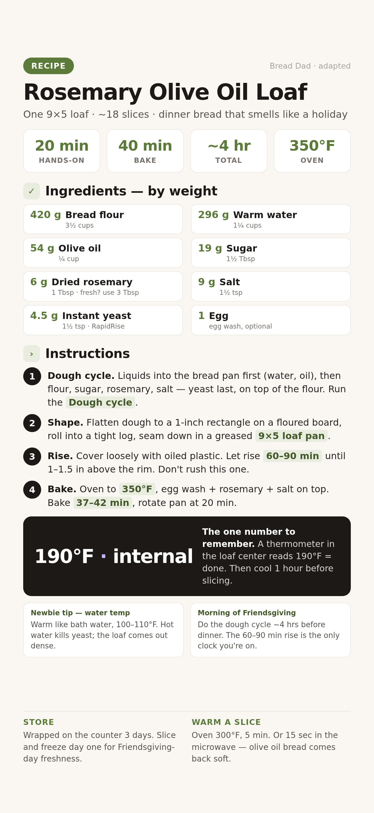

A soft, savory dinner loaf with olive oil in the dough and rosemary in every slice. Your bread machine does the hard part; you shape, rise, and bake. Makes one 9×5 loaf, about 18 slices.

📱 For your phone — tap to open the full-size card, then save it to Photos.
For one 9×5 loaf. Grams lead; volume in the small line.
Weigh if you can. Set the bowl on the scale, tare between ingredients, go by grams.
Pour 296 g (1¼ cups) warm water and 54 g (¼ cup) olive oil into the bread pan. Add 420 g flour, 19 g sugar, 6 g rosemary, and 9 g salt. Put 4.5 g yeast on last, right on top of the flour, so it stays dry until mixing starts.
Stop Water must be warm, not hot. 100–110°F — like bath water. Hot water kills the yeast and the loaf comes out dense.
Seat the pan in the machine and start the Dough cycle. It mixes, kneads, and gives the dough its first rise. When it beeps done, pull the pan out.
What to expect: a smooth, slightly tacky ball of dough, roughly doubled. It should spring back slowly when poked.
Tip the dough onto a lightly floured board. Press it into a flat rectangle about 1 inch thick, then roll it up tightly like a jelly roll. Set it seam-side down in a greased 9×5 loaf pan, and press gently so dough reaches the corners.
Note The tight roll is what makes the sandwich-loaf shape. Loose rolling gives you a lumpy crown — still tasty, just lumpier.
Lay a piece of lightly oiled plastic wrap loosely over the pan. Let it rise 60–90 minutes, until the dough sits 1–1.5 inches above the pan rim.
Stop Don't shortcut the rise. If it goes in the oven still rising hard, the crust cracks or bursts. Slow kitchen? Give it the full 90 and check again.
Preheat to 350°F while the dough finishes rising. Beat the egg with a splash of water, brush it over the top, and sprinkle on a pinch of dried rosemary and coarse salt if you have it.
Slide the pan onto the middle rack. Bake 37–42 minutes, rotating the pan at the 20-minute mark for even browning. It's done when the top is deep golden and the loaf's center reads 190°F on a thermometer — the one number to remember.
What to expect: a hollow sound when you tap the bottom. No thermometer? Tap test plus golden top is your cue.
Turn the loaf out onto a wire rack and cool about an hour before cutting. Warm it in a 300°F oven for 5 minutes right before dinner if you want it hot at the table.
Stop Cutting hot bread gums up the crumb. It looks done but slices mushy — the hour is doing real work.
Water was probably too hot and killed the yeast. Next bake: 100–110°F, bath-water warm.
Under-risen dough kept rising in the oven. Next time wait for the full 1–1.5 inches above the rim.
Old yeast, or the kitchen is cold. Proof the yeast packet in warm water first, and rise near (not on) a warm oven.
Tent foil over the top for the last 15 minutes, and trust the thermometer: 190°F in the center.